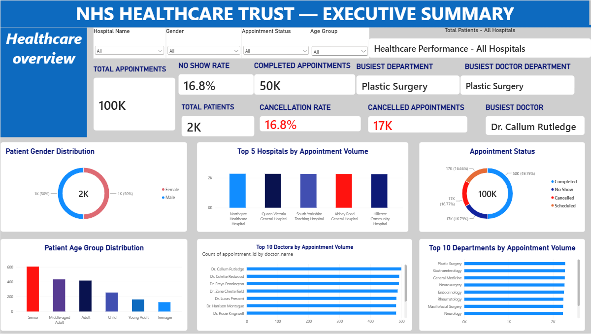

Retail Sales Performance Dashboard -This dashboard analyzes retail sales performance across regions, categories, and products.
It tracks key KPIs including Total Sales, Transactions, Average Basket Size, and % Growth YOY.
.

Bike Sales Analysis – Power BI
Created an interactive Power BI dashboard to analyse bike sales, customer trends, product performance, and regional sales. The project involved data cleaning, transformation, modelling, and visualisation to generate clear business insights.
Tools: Power BI • Power Query • Data Visualisation • Data Analysis

Healthcare Analytics Dashboard |
Built an interactive five-page healthcare analytics dashboard using appointment, payment, doctor, diagnosis and hospital data. The project analysed 100,000 appointments across 50 hospitals, 225 doctors and 2,000 patients, with dedicated analysis for hospital operations, patient demographics, clinical diagnoses and financial performance.
Developed reusable DAX measures using SUM, COUNT, DISTINCTCOUNT, AVERAGE, CALCULATE, TOPN, SUMMARIZE, MAXX and SELECTEDVALUE. Created executive KPI cards, Top 10 hospital and doctor rankings, patient demographic charts, diagnosis analysis, payment-method and payment-status analysis, insurance coverage analysis and monthly revenue trends.
Implemented interactive Hospital, Gender, Age Group and Appointment Status slicers, synchronized slicers across pages, and dynamic KPI titles using DAX and Power BI's field-value title functionality.
The project also involved troubleshooting noisy date visualisations, incorrect chart types, duplicate counting of doctors, and dashboard usability issues.
Tools: Microsoft Power BI, DAX, relational healthcare data
Key areas: Healthcare Analytics • Business Intelligence • Data Visualisation • DAX • KPI Development • Interactive Dashboards • Operational Analytics • Financial Analytics • Patient Analytics